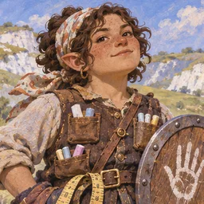
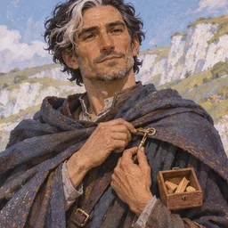
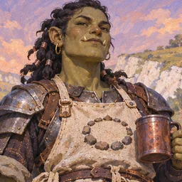
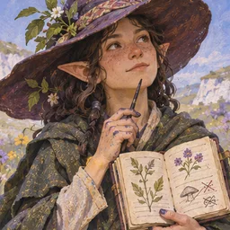
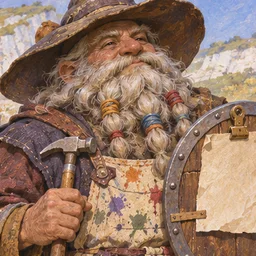
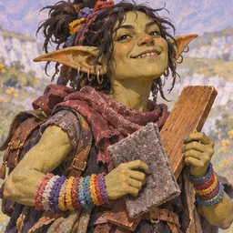
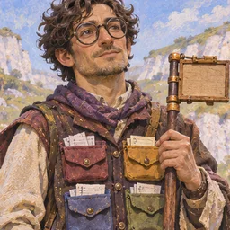
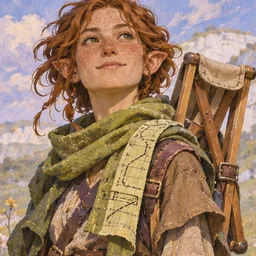

Дара Каменная Лента
воин 3 · ОЗ 31 · КД 11 · Скорость 30 фтОбмерщица, которая умеет удержать тяжёлое и вовремя отойти
Коренастая полурослица в жилете с карманами для мелков; на поясе мягкая мерная лента, на щите нарисована открытая ладонь.
После работы на тесном складе Дара хочет проверить, можно ли строить сразу для тех, кому здесь жить. Она пришла в Широкий Порог с собственным набором верёвок.
Открыть фигурку для поля
Оружие и заклинания
Оружие · Длинный меч, Ручной топор

Ильмар Тихий Шаг
плут 3 · ОЗ 24 · КД 13 · Скорость 30 фтСтранствующий настройщик дверей и внимательный слушатель
Высокий человек с серебряной прядью, мягкими башмаками и коробочкой деревянных клиньев. Застёгивает плащ сбоку, чтобы пряжка не стучала о стол.
Ильмар устал зарабатывать тем, что незаметно проходит куда угодно. Он хочет сделать двери, возле которых заметить гостя легко, а отказать ему спокойно.
Открыть фигурку для поля
Оружие и заклинания
Оружие · Рапира, Короткий лук

Сана Медная Кружка
жрец 3 · ОЗ 24 · КД 11 · Скорость 30 фтСлужительница очага, умеющая заботиться без обещания всемогущества
Орчиха с коротко заплетёнными волосами, дорожной кружкой и льняным передником поверх доспеха. Её знак веры изображает свободное место у огня.
Сана приносит в Порог обычные бинты, воду и привычку спрашивать, нужна ли помощь. Ей хочется, чтобы забота здесь не означала вечного долга.
Открыть фигурку для поля
Оружие и заклинания
Оружие · Боевой посох
Заклинания · Лечащее слово, Обнаружение магии

Эста Листок
волшебник 3 · ОЗ 20 · КД 12 · Скорость 30 фтУченица природной магии и любительница честных опытов
Юная эльфийка с чернильными пальцами, широкополой шляпой и тетрадью, где растения зарисованы рядом с ошибками наблюдения.
Эста хочет сравнить придуманные решения с настоящими потребностями. Она принесла полоски ткани, чашки и уверенность, что неудачный опыт всё равно полезен.
Открыть фигурку для поля
Оружие и заклинания
Оружие · Боевой посох
Заклинания · Обнаружение магии, Туманный шаг

Оррен Пятнистый Фартук
воин 3 · ОЗ 31 · КД 11 · Скорость 30 фтПлотник, который учится не считать свой опыт последним словом
Дварф с седой бородой в кольцах из цветной нити. Носит лёгкий молоток, широкую шляпу и щит, на котором удобно закреплять бумагу.
Оррен умеет делать крепкие вещи и хочет сделать дом, который разрешено переделывать. Он приходит как равный устроитель, без должности старшего мастера.
Открыть фигурку для поля
Оружие и заклинания
Оружие · Длинный меч, Ручной топор

Тива Неровный Такт
плут 3 · ОЗ 24 · КД 13 · Скорость 30 фтМузыкантка и устроительница встреч разного размера
Гоблинка в разноцветных напульсниках; вместо громкого инструмента в дороге носит дощечку для ритма и кусок войлока.
Тива любит полные залы, но однажды пропустила просьбу друга закончить праздник. В Пороге она хочет устроить событие, с которого удобно уйти.
Открыть фигурку для поля
Оружие и заклинания
Оружие · Рапира, Короткий лук

Рен Четыре Кармана
волшебник 3 · ОЗ 20 · КД 12 · Скорость 30 фтПисец бытовых договорённостей и исследователь ясных знаков
Человек с крупными очками и четырьмя разноцветными карманами для записок. На трости закреплена маленькая дощечка, которую легко повернуть к собеседнику.
Рен пишет вывески для тех, кто не читает длинных объявлений. В Порог он принёс краску и желание проверить, понятен ли знак без его объяснения.
Открыть фигурку для поля
Оружие и заклинания
Оружие · Боевой посох
Заклинания · Обнаружение магии, Туманный шаг

Фенна Дальний Стул
жрец 3 · ОЗ 24 · КД 11 · Скорость 30 фтПомощница дорожного приюта, которая любит создавать собственные маршруты
Полуэльфийка с веснушками, складным сиденьем за спиной и зелёным шарфом, который служит лентой для пометок на плане.
Фенна помогала гостям находить место для отдыха и хочет сама выбирать, как будет устроено новое жильё. Она пришла в Порог с правом на свою идею и свой отказ.
Открыть фигурку для поля
Оружие и заклинания
Оружие · Боевой посох
Заклинания · Лечащее слово, Обнаружение магии